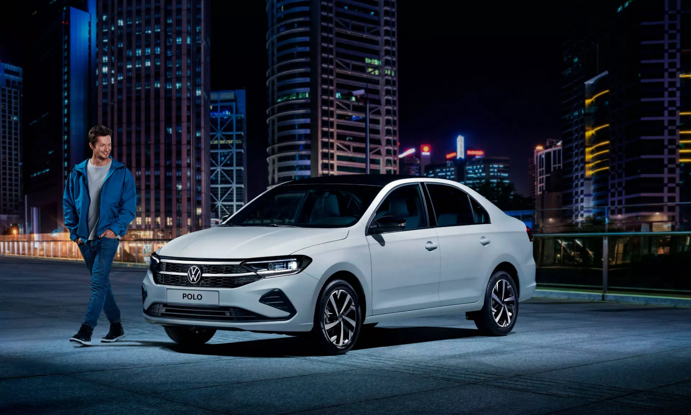
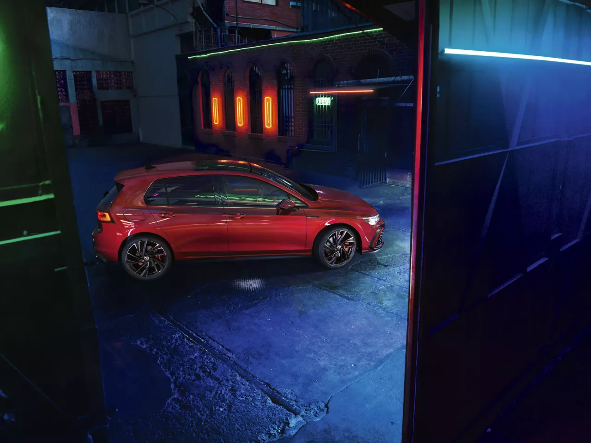
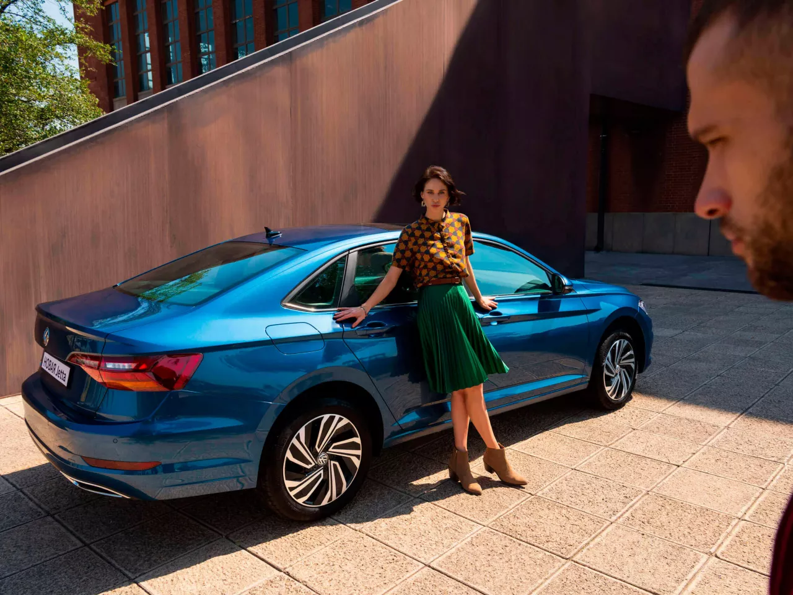
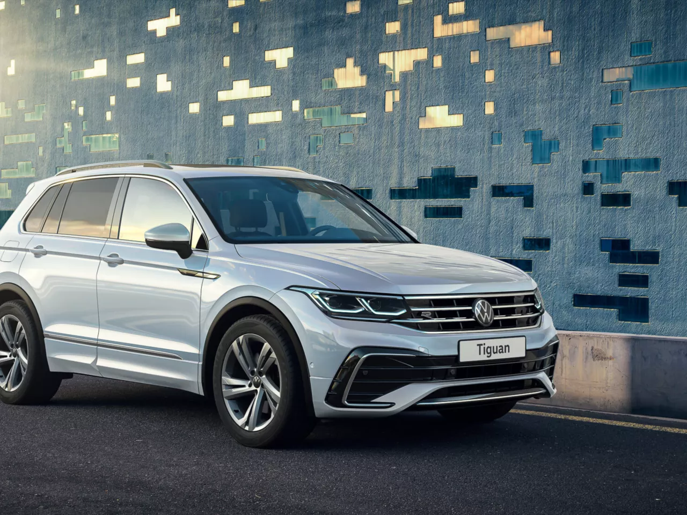

Volkswagen Polo с пакетом «Спорт»
Поклонники спортивного стиля по достоинству оценят новый опциональный пакет «Спорт», доступный для комплектаций Respect, Status и Exclusive НОВОГО Volkswagen Polo. Эксклюзивные элеенты внешнего вида модели, а также уникальная отделка интерьера, представленные в новом пакете, заметно выделят ваш автомобиль в потоке машин.
НазадVolkswagen Golf
На российском рынке скоро появится Volkswagen Golf восьмого поколения. Модель будет доступна в комплектации Exclusive с двигателем 150 л.с. и версии GTI с двигателем 245 л.с. НОВЫЙ Volkswagen Golf привлекает внимание выразительным внешним дизайном и стильной отделкой интерьера. Практически все элементы управления НОВОГО Volkswagen Golf являются цифровыми, а широкий выбор инновационных опций модели превратит любую поездку в удовольствие.
НазадVolkswagen Jetta
Jetta – это автомобиль, созданный для ярких впечатлений за рулём. Дизайн модели полностью обновлён, а светодиодная оптика теперь входит в базовое оборудование. Атмосферная подсветка салона создаст особое настроение в поездках, а панорамная крыша подарит ощущение простора и свободы. Среди функционального оборудования стоит отметить мультимедийную систему Discover Pro с 8-дюймовым экраном, цифровую приборную панель и современные системы помощи водителю. Но и это ещё не всё!
НазадVolkswagen Tiguan
Внешний дизайн бестселлера Volkswagen заметно изменился: экстерьер украшают новые бамперы, обновленная передняя решетка радиатора, хромированные молдинги, а также новые передние фары IQ Light и задние фонари с динамическими поворотными огнями. В НОВОМ Tiguan появились новые обивки сидений и цвета отделки салона, а также многоцветная атмосферная подсветка. Набор функционального оборудования расширился за счет обновленной мультимедийной системы с расширенным функционалом и возможностями персонализации. Климатическая установка Climatronic теперь переведена в цифровой формат – управлять ею можно с помощью сенсорных регуляторов и кнопок.
Назад